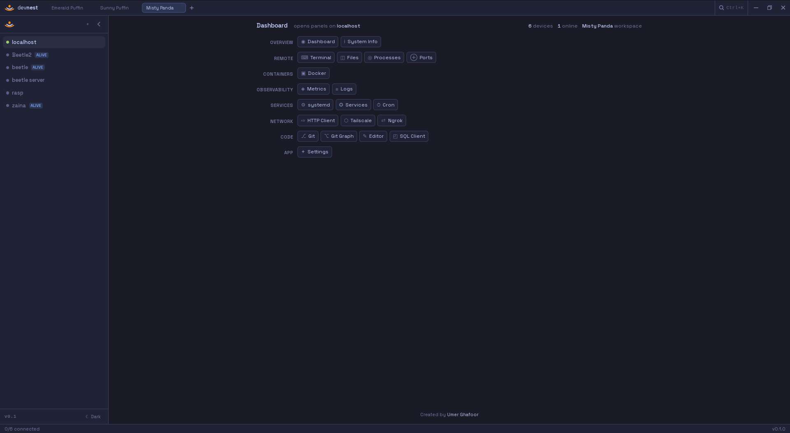

DevNest is a local-first desktop control panel for developers and self-hosters. SSH, Docker, metrics, files, terminals and more — unified, no cloud required.

Stop tab-hopping between SSH windows, monitoring dashboards, and Portainer. DevNest brings all your tools into a single, native desktop app.
Each panel is a focused tool. Open as many as you need, per device, simultaneously.
DevNest has no remote agent. Every operation is a plain SSH command. If you can do it in a terminal, DevNest can surface it.
Enter a hostname, user, and SSH key or password. DevNest opens one persistent SSH connection and keeps it alive automatically.
Open Docker, Metrics, Terminal, or any of the other 16 panels. Each runs commands over the existing SSH connection — no second handshake.
Switch devices in the sidebar and every panel updates atomically. Or open a new tab to work on two devices side by side.
SSH keys, database passwords, and sudo credentials are encrypted by your OS keychain. Nothing is ever written to disk in plaintext.
Tauri 2 gives native performance and a tiny binary. React 19 powers a fast, reactive UI. Rust handles all system access safely.
Desktop shell in Rust. Native window, OS keychain, system tray, auto-updates.
Fast UI rendering with full type safety from frontend to IPC boundary.
Persistent SSH connections, PTY channels, SFTP, and SSH tunnels in one binary.
Full PTY terminal in the browser. tmux sessions persist across reconnects.
The VS Code editor engine for editing remote files in-place over SFTP.
Utility-first styling with a fully custom design system.
Device config and session state stored locally via tauri-plugin-sql.
12 typed stores covering device, theme, SQL, HTTP, pane, and UI state.